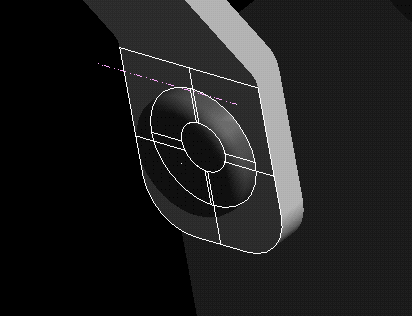
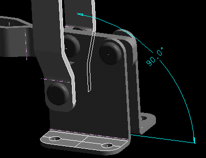
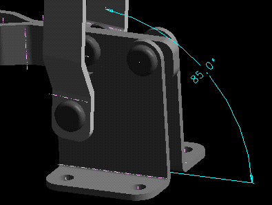

(Demonstrator 2)
| Next Step | Return to Table of Contents | Previous Step |
Get Handle part and Clamp Assembly

Add the Handle part to the assembly

Constrain Handle to Pivot Pin


Create a Colinear Constraint


Constraint the end face from the Handle to the cap face of the Pivot Pin.

Constrain the face (as shown)

Modify the angle to 85 deg

| Next Step | Return to Table of Contents | Previous Step |